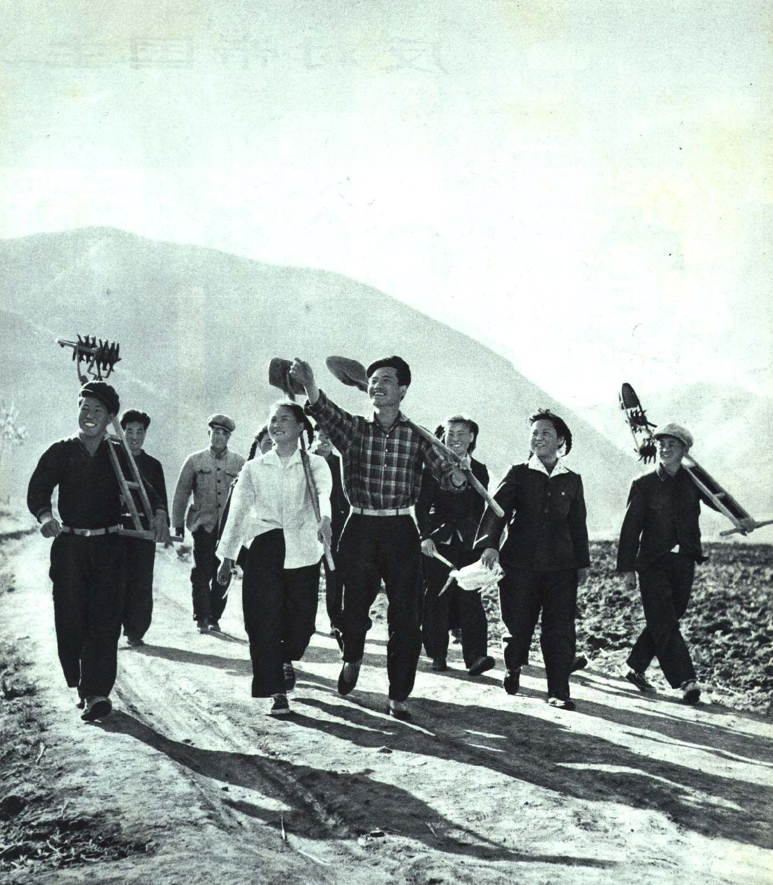

Mom, what year were you sent down to the countryside?
How old were you?
Where did you go?
How long were you there for?
What crops did you grow?
At the time, how did you feel about going “Up to the Mountains and Down to the Countryside”?
Expectant? Anxious? Resigned?
What is your clearest memory from that time?
